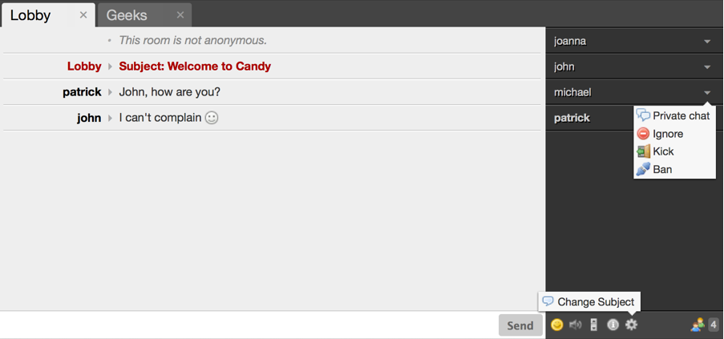

Candy
— a JavaScript-based multi-user chat clientCandy is different. It's built for your community.
Why Candy?
- Focused on real-time multi-user chatting → Screenshot & Demo
- Easy to configure, easy to run, easy to use → Setup & Usage
- Highly customizable → Plugins & Event Hooks
- 100% well-documented JavaScript source code → API Documentation
- Built for Jabber (XMPP), using famous technologies → Under The Hood
- Used and approved in a productive environment with up to 400 concurrent users → About Candy
- Works with all major web browsers including IE7
It's worth more than a thousand pictures!
Awesome Features!
- Beautiful default theme
- Join multiple rooms and start private conversations
- Get notified when new messages arrive
- Ignore spammers and people you don't like
- Moderation: Kick and ban users, change the subject of the room
Setup & Usage
Prerequisites
Before you get started you need access to a Jabber server with HTTP-binding enabled. We provide guides for ejabberd and Openfire to help you setting up and configuring your own server within minutes: Installing a Jabber server.
To run the example you'll also need an HTTP server with proxy capabilities because it's not allowed to make cross-domain AJAX requests.
Candy is delivered with a sample .htaccess file for Apache HTTP server. Please note that you need to have to following Apache modules enabled: mod_rewrite, mod_proxy and mod_proxy_http. For more information about the configuration of different web servers take a look at the following guide: HTTP Proxy Configuration.
Setup
Download Candy and extract it in your web directory.
Getting Started
If you're using Apache copy example/htaccess to example/.htaccess and change the rewrite rule to point to your HTTP-Bind service. For other web servers check out the HTTP Proxy Configuration guide.
Sample .htaccess file, assuming your Jabber host is running the HTTP-Bind service at yourhost.com/http-bind/ on port 5280:
AddDefaultCharset UTF-8
Options +MultiViews
RewriteEngine On
RewriteRule http-bind/ http://yourhost.com:5280/http-bind/ [P]
Open your web browser and navigate to example/index.html. Make sure that you're visiting the site via Apache because it's essential that the requests to http-bind/ are redirected to your jabber server by the .htaccess file.
You should be greeted with a login form. Enter your JID (username@yourhost.com) and password to connect to the Jabber server.
Configuration
Configuring Candy is pretty simple. Take a look at the example/index.html file to get an idea how to load the libraries and to initialize Candy.
You can configure Candy by passing an object containing following options to Candy.init:
Candy.init( BOSH_URL, { core: { CORE_OPTIONS }, view: { VIEW_OPTIONS } } );
Core Options
debug — true or false- Enable debug output to browser console.
autojoin — boolean true or an array containing rooms to auto-join: [room1,room2,...]-
If set to true, Candy will follow XEP-0048 and auto-join rooms based on the bookmarks configuration of your Jabber server.
Please note: Bookmarks are supported by Openfire, but not by ejabberd.
You need to tell ejabberd which rooms to join by passing an array such as ['jid1', 'jid2', ...]
View Options
language — language identifier, default: 'en'-
Tell Candy which language pack to use. Following languages are currently delivered with the package:
English (en), German (de), French (fr). Please contribute your translations to the project. resources — path to resources folder, default: 'res/'- Path to the resources folder with trailing slash.
crop — settings to crop messages & nicknames: { message: { nickname: 15, body: 1000 }, roster: { nickname: 15 } }- Messages and nicknames will be cropped to the specified lengths.
messages — object containing settings to clean up old messages: {limit: 2000, remove: 500}-
If message count hits limit, remove n messages.
Because browsers are getting slower as the DOM tree grows, Candy will remove messages from each room based on this settings to keep the DOM tree at an acceptable size. You probably don't want to change the default values.
Example
Following example configuration will enable debugging, auto-join two rooms, and display the front end in german language:
Candy.init( 'http://yourhost.com/http-bind/', {
core: {
debug: true,
autojoin: ['room1@conference.yourhost.com', 'room2@conference.yourhost.com']
}, view: {
language: 'de'
}
});
Login Methods
There are five different methods to connect to a chat server:
-
Candy.Core.connect('jid', 'password') - Connnect as a registered user.
-
Candy.Core.connect('servername') - Connnect anonymously to a specific server.
-
Candy.Core.connect('jid') - Users will be greeted with a login form. In order to authenticate they have to provide their password.
-
Candy.Core.connect() - Users will be greeted with a login form. In order to authenticate they have to provide their JID (username@yourhost.com) and password.
-
Candy.Core.attach(jid, sid, rid) - Attach to an established session (HTTP pre-binding). This method is useful to intialize sessions at server side. Jack Moffitt, creator of Strophe, has written a nice article about pre-binding.
Usage
The user interface of Candy is very intuitive. Just take a look at the screenshot. No things to learn. No manual to read.
You might want to try the demo and get the real feeling instead.
Administrative Options
Room moderators are able to kick or ban users and change the room's subject.

Getting Help
- Check out the official wiki pages and issue tracker on GitHub.
- There's also a mailing list on Google Groups.
- Use it, love it, spread it: Tell the world about Candy.
- Improve it: Feel free to fork and push your changes back into the main repository.
- Extend it: Write plugins to make Candy more awesome.
- Give us feedback: Tell us what you like about Candy and what you don't by dropping an email.
Contributing
Plugins & Event Hooks
Due to the nature of JavaScript and the built-in event hooks, customizing Candy is no rocket science.
Plugins
There's an official plugin repository called candy-plugins. We would like to see the number of plugins grow. Just fork it, write your own plugin and push it back into the main respository.
Download Candy Plugins and extract it in your web directory.
The Colors Plugin — An Example
 This plugin has originally been developed for our productive chat and because our users love it, we decided to share it with you. It's also a great example how to customize Candy.
This plugin has originally been developed for our productive chat and because our users love it, we decided to share it with you. It's also a great example how to customize Candy.
What it does is adding a color chooser to the UI and displaying messages sent by users in their chosen colors.
To enable Colors you have to include its JavaScript code and stylesheet:
<script type="text/javascript" src="candyshop/colors/candy.js"></script>
<link rel="stylesheet" type="text/css" href="candyshop/colors/candy.css" />
Finally call its init() method after Candy has been initialized:
Candy.init('/http-bind/');
CandyShop.Colors.init();
Candy.Core.connect();
Styles & Templates
We use to write our themes as plugins. The plugin folder is a good place to put your custom stylesheet into. During the process of styling you'll probably find yourself changing a template here and adding some logic there. If this happens you're already organized. Just think about it as writing a plugin that changes the appearance.
Event Hooks
Candy provides easy accessible hooks that will be called before or after a specific event happens. Just overwrite the default handlers in order to extend the basic functionality with your custom code. All available event hooks are listed in the API documentation.
API Documentation
The API documentation of the latest version can be found here.
Under The Hood
Candy is built with JavaScript using long poll AJAX requests to emulate bidirectional-streams between client and server following the draft standard XEP-0124 of the XMPP Standards Foundation. By using this standard there are no additional requirements on client-side but having a web browser installed.
Used Libraries
- Strophe.js an XMPP library for JavaScript
- jQuery The Write Less, Do More, JavaScript Library
- mustache.js Logic-less templates with JavaScript
Credits
- famfamfam.com: Silk Icons is a smooth, free icon set, containing over 700 16-by-16 pixel icons.
- Simple Smileys are beautifully simple emoticons.
- Flash MP3 Player is a very simple flash audio player used by Candy for audio notifications.
- Colin Snover provides a fix for browsers not supporting latest Date.parse().
- Ben Cherry wrote a great article about the JS module pattern.
- Swissjabber provides the chat server for our official demo. Swissjabber is a service by nine.ch
- Amiado Group allowed us to make Candy freely available for everyone! :)
About Candy
Candy — abbreviation for Chats are not dead yet — was developed by Michael Weibel (@weibelm) and Patrick Stadler (@pstadler) on behalf of our employer Amiado Group.
This project was built as a replacement for the ancient chat software used by one of our large community websites. We love open source software. Therefore we decided to make Candy freely available for everyone and give something back to the community.